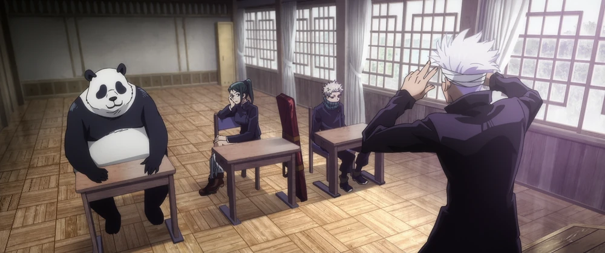
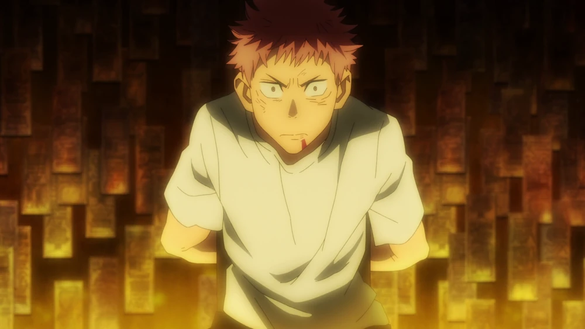
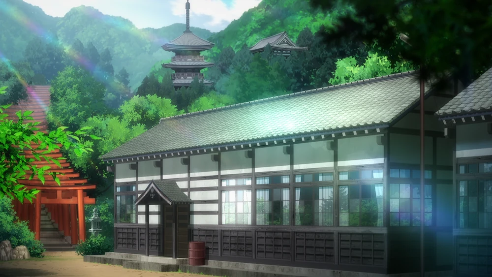
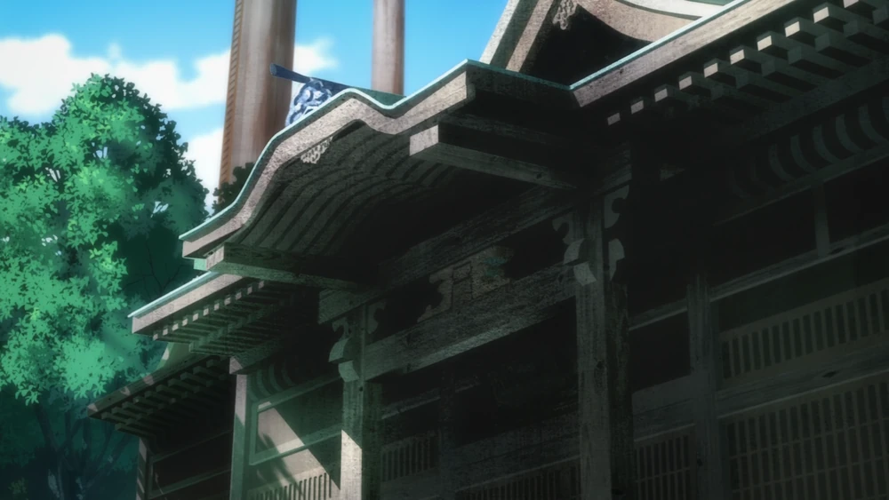
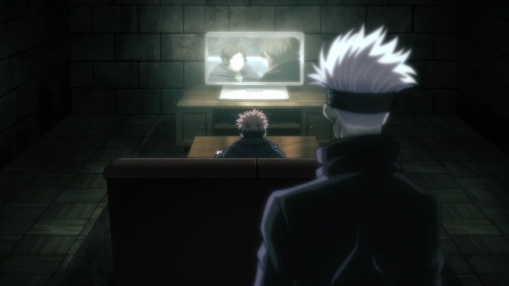
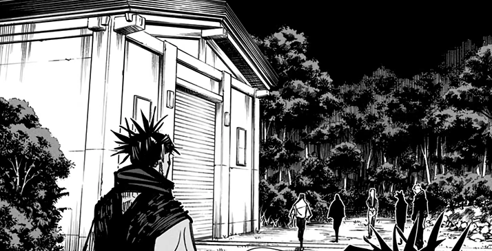

JUJUTSU - TECH
Tokyo Metropolitan Curse Technical College
Tōkyō Toritsu Jujutsu Kōtō Senmon Gakkō?
|  | Classrooms: As with any school, there are several classrooms throughout the facility. The one Gojo sensei uses to teach his students is a small room with windows, desks for the students, and a blackboard alongside a teaching area. |
|---|---|
|  | Isolation Chamber: Those being held for execution are sentenced to an isolation chamber where the walls are entirely covered in talismans. Both Yuji and Yuta were sentenced here for a "secret execution." |
|  | Dormitory: Each student is given a large room in the school dorms to stay in. They can be reorganized and decorated as the student sees fit. Due to the low volume of students there are many empty rooms. |
|  | Morgue: In one of the buildings, there is a morgue for fallen sorcerers who are killed in action. Their bodies are brought back to the morgue, where their fellow sorcerers can properly mourn the loss and dispose of the corpse. |
|  | Hidden Room: Satoru Gojo has a spacious room somewhere on campus that kept hidden from authority. He hid Yuji here while training him for the Goodwill Event. Following Gojo's disappearance, his students used the room to hide and regroup with Yuki Tsukumo. |
|  | Cursed Warehouse (忌き庫こ Kiko?): There is a small warehouse on the path towards of the Tombs of the Star that is used to store cursed tools and cursed objects. Following the Shibuya Incident, the Kamo and Zenin clans cleared out most of the cursed tools and took them back to their respective properties. |

“To eradicate all curses and protect humanity.”
Gojo Satoru
Name: Gojo Satoru (五条悟)
Age: 28 (as of the main timeline)
Gender: Male
Height: 190 cm (6'3")
Occupation: Jujutsu Sorcerer, Teacher at Tokyo Metropolitan Magic Technical College
Affiliation: Tokyo Jujutsu High
Grade: Special Grade Jujutsu Sorcerer
Relatives: Gojo Family (one of the three great sorcerer families)

Cursed Technique Lapse: Blue
Blue, or Strengthened Limitless, amplifies Limitless to bring the concept of negative distance to reality. This technique forces the surrounding space to try and fill in the vacuum. He can also move the point of gravity at will, augmenting its destructive capabilities greatly.
.jpg)
Hollow Technique: Purple
Purple, or Colliding Limitless, is a secret ability known to only a few in the Gojo Family. It is is the fusion of both Red and Blue. This produces an imaginary mass which erases everything in its path from reality which deals extensive destructive damage on contact, far superior to Red and Blue.
Cursed Technique Reversal: Red
Red, or Reversed Limitless, reverses Limitless through the concept of divergence, generating the power to repel. By using the reverse cursed energy the sorcerer can use Limitless to repel rather than attract. This ability has two times the destructive ability of Blue.

Unlimited Void (無む量りょう空くう処しょ Muryōkūsho?)
Satoru's Domain Expansion. It creates a metaphysical space that causes the victims to receive all kinds of stimuli and information endlessly, restraining their thought processes and actions. In terms of raw strength, Satoru's domain is equal to Sukuna's own Malevolent Shrine on the inside, only losing due to Malevolent Shrine's open domain that allowed Sukuna to destroy the barrier of Unlimited Void. Satoru's skill with his Domain Expansion is so great that he can precisely control the range and time of it's activation for only 0.2 seconds, limiting its lasting effect on those he traps within it, and is able to freely change the conditions of Unlimited Void's barrier. Those he makes physical contact with are also immune to its effect.
masamichi yaga
Name: Masamichi Yaga (夜蛾正道)
Age: Mid-40s (approx.)
Gender: Male
Height: 191 cm (6'3")
Occupation: Principal of Tokyo Jujutsu High, Jujutsu Sorcerer
Affiliation: Tokyo Metropolitan Magic Technical College
Grade: Semi-Grade 1 Jujutsu Sorcerer
Relatives: None mentioned explicitly, but he was the mentor of Satoru Gojo, Suguru Geto, and Shoko Ieiri.
Cursed Corpse (Jugai)
Masamichi can infuse the dolls he creates with a cursed energy core in order to bring inanimate objects to life and control them with an incantation. He is the only one able to develop fully independent cursed corpses that retain their own cursed energy. He was the Principal of Tokyo Jujutsu High and a grade 1 jujutsu sorcerer.
close quarters combat
He made numerous cursed corpses capable of performing a variety of tasks. Some were for combat and others provided training support. While his primary talent was crafting puppets. He was a capable close range combatant, as he was the one who taught Panda to fight and was willing to fight a fellow sorcerer without the use of his cursed corpses.
Soul replication
To create an independent cursed corpse, a sorcerer must replicate soul information from physical information, then input that into cursed corpse cores. An example of this would be Takeru, a dog-like cursed corpse created from Kusakabe's nephew's soul info so that his mother and uncle could see him again.
shoko ieiri
Name: Shoko Ieiri (家入硝子)
Age: Late 20s to early 30s (approx.)
Gender: Female
Height: 167 cm (5'6")
Occupation: Doctor at Tokyo Jujutsu High, Jujutsu Sorcerer
Affiliation: Tokyo Metropolitan Magic Technical College
Grade: Semi-Grade 1 Jujutsu Sorcerer
Relatives: None explicitly mentioned

RCT application
Shoko has now shown the capacity to use normal cursed techniques but, she possesses the rare ability to use reverse cursed technique. She can convert it into output and apply it to others in order to regenerate lost limbs and heal wounds. Something even Satoru Gojo cannot do.
innate reversed curse technique
Shoko was born with the rare ability to use reverse curse technique. Cursed energy comes from negative emotions, unfit for healing living things. Reverse cursed technique uses the principle of multiplying a negative by another negative to produce a positive.
a skilled doctor & sorcerer
Her skills as a doctor also make Shoko very knowledgeable in the realm of sorcery as it relates to biology. By dissecting two transfigured humans, she was able to discover they weren't actually cursed spirits but former humans transfigured by a cursed technique.